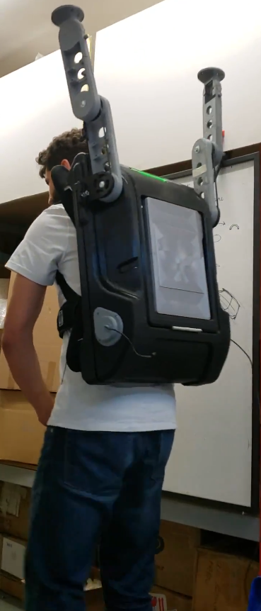
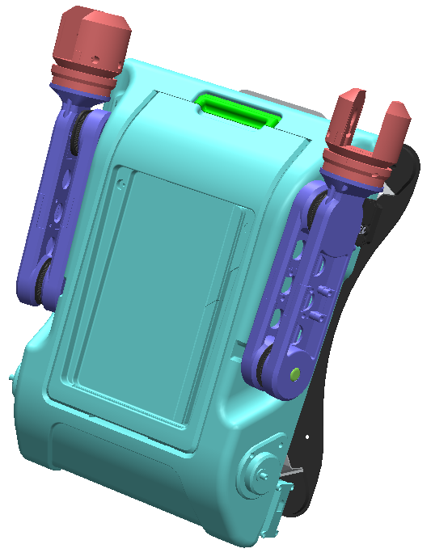
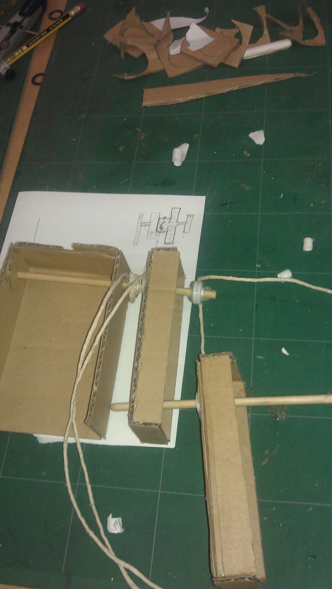

Novel mechanism: Single Input, Dual Joint Movement with Integrated, Self-Contained Motion Control

Designed a mechanical, human-powered solution for a client who required robot arms capable of movement without electricity. Arms were mounted on a backpack to support video cameras as part of a video prop.
Translated the client's vision into a functional mechanical design operating entirely without external power — fitting the mechanism within the constraints of an existing backpack through multiple CAD iterations and prototypes.
Delivered a functional robotic arm with a self-contained control mechanism. A novel shoulder joint uses human power to coordinate both arm and forearm movement with no electrical controllers.

The arm was worn by a performer on set during a live video shoot. Two extended arms rise above the performer's shoulders, each holding a mounted camera — all controlled by the wearer's natural body movement.
The backpack acts as the structural base, distributing weight across the torso while keeping the mechanism self-contained. No visible cables, motors, or controls — the mechanical system is entirely internal.
This real-world deployment validated the core design goal: a fully wearable, power-free robotic arm system suitable for dynamic on-set use.
Annotated design diagram

CAD assembly view
Most robotic mechanisms require independent actuators for each joint. Here, a single internal pulley at the shoulder simultaneously controls both the shoulder and elbow joints — reducing mechanical complexity, saving weight and space, and improving energy efficiency by powering one actuator instead of two.
A GT2 belt connects the shoulder and elbow pulleys, directly translating arm rotation into forearm movement. This creates a natural “orbiting” effect at the elbow and allows precise control over range of motion through pulley size ratio — without a dedicated motor at the elbow.
A static external pulley at the shoulder drives forearm orbit purely through belt interaction as the arm rotates — an effect that typically requires gear trains or multi-link kinematic systems. This passive coordination across joints is a key novelty of the design.
Rather than a dedicated return actuator, gravity handles the reset passively. This reduces energy consumption, simplifies control logic, and provides a self-balancing feature without sacrificing control during the actuation phase.

Early physical prototype
 ▶
▶
Cardboard box model in motion
Full mechanism test demonstrating coordinated shoulder and elbow movement driven by a single human input.
 ▶
▶
See the full range of mechanical and product design work in the portfolio.